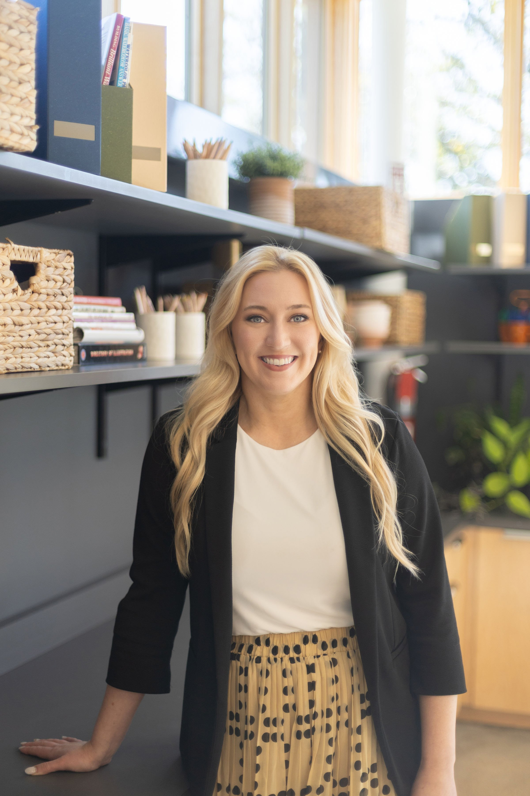

TRADITIONAL ART / EXHIBIT
Samantha Thibert Harrill
Executive Director · Warroad RiverPlace
Samantha designed Warroad RiverPlace, Warroad’s cultural center, using skills she developed in TAD’s exhibit design program. She now serves as its Executive Director, working tirelessly to bring the arts to northern Minnesota and championing all art mediums, theater, art workshops for children and adults, music, and cultural and celebration events. She also maintains her ceramics practice at Northern Spruce Studio.
Professional profile ↗Listen to Sam on Let’s Talk Art ↗
Photo source: Warroad RiverPlace